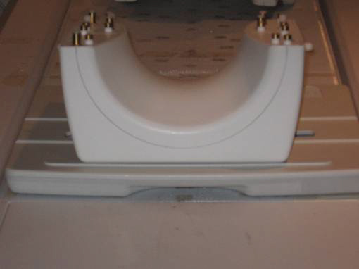
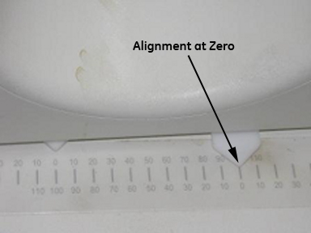
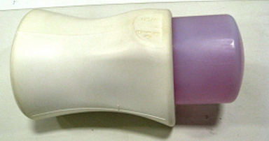
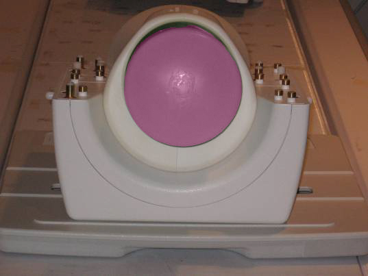
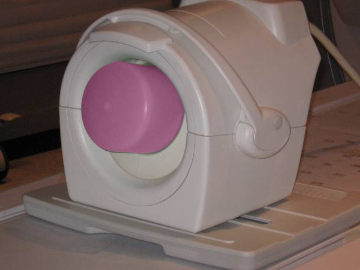
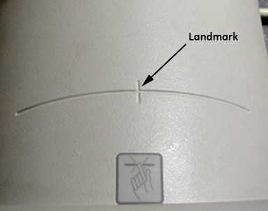

Operating Documentation
Direction 5670006, Rev# 1
Discovery MR750w GEM Service Methods
Module Version 10.0, Version Date 10/19/11
Operating Documentation |
| Required Persons | Preliminary Reqs | Procedure | Finalization |
|---|---|---|---|
| 1 | Not Applicable | 15 mins | Not Applicable |
| NOTE: | Coils do not ship with phantoms. Phantoms come in a unified phantom set with the MR system. |
| Item | Qty | Effectivity | Part# | Manufacturer | |
|---|---|---|---|---|---|
| Phantom Positioner | 1 | Legacy and Unified Phantom Kit | 5114356-12 | - | |
| Large Cylindrical Unified Phantom | 1 | Unified Phantom Kit | 5342679-2 | - | |
| Condition | Reference | Effectivity |
|---|---|---|
The following coil configuration names must be installed to run this tool: HD TR Knee PA. | - | - |
Place the lower section of the coil on the patient table as shown in Illustration 1.
Illustration 1: Coil Placement

Align the alignment mark on the coil to zero position on the scale as shown in Illustration 2.
Illustration 2: Alignment Marks

Place the large cylindrical unified phantom into the positioner as shown in Illustration 3.
Illustration 3: Phantom Placed into Positioner

Place this phantom-positioner setup on the lower part of the coil as shown in Illustration 4.
Illustration 4: Phantom Positioner Placement

Ensure that the phantom positioner is aligned with the posterior coil section as indicated by the marks on the positioner and the coil (see Illustration 5).
Illustration 5: Positioner Aligned with Posterior Coil Section

Carefully align the connector pins on the lower part of the coil with the upper part of the coil and latch both the coil sections into place as in Illustration 6. (The scanner will not operate if the coil sections are not latched correctly.)
Illustration 6: Coil Sections in Place

Connect the coil to Port A of the system LPCA and landmark the coil at the cross mark available near the handle of the coil (see Illustration 7). Advance to scan.
Illustration 7: Landmark the Coil

Proceed to the Multi-Coil Quality Assurance Tool procedure to test the coil.
No finalization steps.